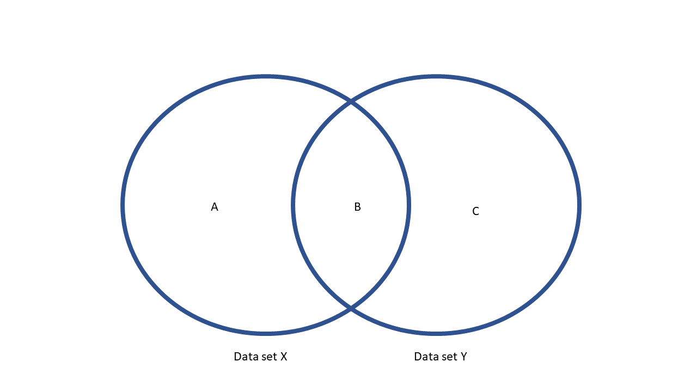

Data Wrangling
Make sure you have the tidyverse installed, and the SAFI data set
downloaded to your data folder by running the code from the Set-up section
Basic Data Manipulation
library(tidyverse)
library(here)
read_csv(here("data/SAFI_clean.csv"), na = "NULL") %>%
filter(village == "Chirodzo") %>%
mutate(people_per_room = no_membrs / rooms,
years_liv = if_else(years_liv > 90, NA, years_liv),
respondent_wall_type = as_factor(respondent_wall_type),
respondent_wall_type = fct_recode(respondent_wall_type,
"Burned bricks" = "burntbricks",
"Mud Daub" = "muddaub",
"Sun bricks" = "sunbricks"),
conflict_yn = case_when(affect_conflicts == "frequently" ~ 1,
affect_conflicts == "more_once" ~ 1,
affect_conflicts == "once" ~ 1,
affect_conflicts == "never" ~ 0,
.default = NA),
day = day(interview_date),
month = month(interview_date),
year = year(interview_date)) %>%
select(key_ID:rooms, day:people_per_room, -village) %>%
filter(interview_date > "2016-11-16" & interview_date < '2017-01-01')## # A tibble: 10 × 9
## key_ID interview_date no_membrs years_liv respondent_wall_type rooms
## <dbl> <dttm> <dbl> <dbl> <fct> <dbl>
## 1 10 2016-12-16 00:00:00 12 23 Burned bricks 5
## 2 34 2016-11-17 00:00:00 8 18 Burned bricks 3
## 3 35 2016-11-17 00:00:00 5 45 Mud Daub 1
## 4 36 2016-11-17 00:00:00 6 23 Sun bricks 1
## 5 37 2016-11-17 00:00:00 3 8 Burned bricks 1
## 6 43 2016-11-17 00:00:00 7 29 Mud Daub 1
## 7 44 2016-11-17 00:00:00 2 6 Mud Daub 1
## 8 45 2016-11-17 00:00:00 9 7 Mud Daub 1
## 9 46 2016-11-17 00:00:00 10 42 Burned bricks 2
## 10 47 2016-11-17 00:00:00 2 2 Mud Daub 1
## # ℹ 3 more variables: day <int>, conflict_yn <dbl>, people_per_room <dbl>Pivoting (or reshaping)
In tidyverse, reshaping is called pivoting. Here’s how you pivot a household roster (reshape wider) so you can merge it with the household data.
Creating fake data
First, I create sa fake household roster, based on the SAFI data,
making sure that the household roster has a number of lines
for each household that is equal to the household size, and has two
randomly generated variables: female and age. Note that age may
be -99, which should be considered missing.
long_data <-
read_csv(here("data/SAFI_clean.csv"), na = "NULL") %>%
select(key_ID,no_membrs ) %>%
uncount(no_membrs) %>%
group_by(key_ID) %>%
mutate(member_ID = row_number()) %>%
rowwise() %>%
mutate(female = sample(0:1,1),
age = case_when(member_ID == 1 ~ sample(18:86,1),
.default = sample(c(0:86,-99),1))) %>%
ungroup()
long_data## # A tibble: 942 × 4
## key_ID member_ID female age
## <dbl> <int> <int> <dbl>
## 1 1 1 1 18
## 2 1 2 0 19
## 3 1 3 1 14
## 4 2 1 0 62
## 5 2 2 1 58
## 6 2 3 1 18
## 7 2 4 1 6
## 8 2 5 0 80
## 9 2 6 1 25
## 10 2 7 0 68
## # ℹ 932 more rowsPivoting long to wide
To merge this into our main data set, we need to make sure we go back to having 1 observation per household. We will do this by using pivot_wider():
wide_data <-
long_data %>%
pivot_wider(names_from = member_ID,
values_from = !ends_with("_ID"))
wide_data ## # A tibble: 131 × 39
## key_ID female_1 female_2 female_3 female_4 female_5 female_6 female_7
## <dbl> <int> <int> <int> <int> <int> <int> <int>
## 1 1 1 0 1 NA NA NA NA
## 2 2 0 1 1 1 0 1 0
## 3 3 0 1 1 0 0 1 0
## 4 4 1 1 0 1 0 0 0
## 5 5 0 0 0 0 0 1 0
## 6 6 0 0 0 NA NA NA NA
## 7 7 1 0 0 0 0 0 NA
## 8 8 1 1 1 1 0 0 1
## 9 9 1 0 0 0 0 1 0
## 10 10 1 0 0 1 0 1 0
## # ℹ 121 more rows
## # ℹ 31 more variables: female_8 <int>, female_9 <int>, female_10 <int>,
## # female_11 <int>, female_12 <int>, female_13 <int>, female_14 <int>,
## # female_15 <int>, female_16 <int>, female_17 <int>, female_18 <int>,
## # female_19 <int>, age_1 <dbl>, age_2 <dbl>, age_3 <dbl>, age_4 <dbl>,
## # age_5 <dbl>, age_6 <dbl>, age_7 <dbl>, age_8 <dbl>, age_9 <dbl>,
## # age_10 <dbl>, age_11 <dbl>, age_12 <dbl>, age_13 <dbl>, age_14 <dbl>, …We only needed to specify two options:
- names_from: this is the column that contains the names (or usually numbers)
for each of our units of analysis. In this case, the
member_ID. - values_from: the variables containing the data. All variables you specify here, will get one column for each possible value of names_from. In our case, these variables
femaleandage. I used tidy select syntax to specify all variables except the ones ending in_ID.
Pivoting wide to long
If we had started with wide data, and had wanted to transform to
long data, we’d have to use pivot_longer():
recreated_long_data <-
wide_data %>%
pivot_longer(!key_ID,
names_to = c(".value", "member_ID"),
names_sep="_",
values_drop_na = TRUE)
long_data## # A tibble: 942 × 4
## key_ID member_ID female age
## <dbl> <int> <int> <dbl>
## 1 1 1 1 18
## 2 1 2 0 19
## 3 1 3 1 14
## 4 2 1 0 62
## 5 2 2 1 58
## 6 2 3 1 18
## 7 2 4 1 6
## 8 2 5 0 80
## 9 2 6 1 25
## 10 2 7 0 68
## # ℹ 932 more rowsIn this case, the syntax is a bit harder to understand than that of pivot wider. It’s good to think first what the original data looks like, and
how I intend to transform it. The wide data has columns key_ID, age_1-19 and female_1-19. I don’t really want to touch the key_ID
column. I want to turn the columns age_1-19 and female_1-19 into three columns: female, age and Member_ID, which contains the values 1-19. This translates to the options we passed to pivot_longer() as follows:
!key_ID: We want to pivot the data that’s in all columns except key_ID.names_to = c(".value", "member_ID"): this specifies the new columns we want to create. It basically says that the existing column names consist of two parts: one part (i.e. female and age) that we wish to keep as column names , and one part (i.e. the numbers 1-19) which should be put into a new column which we will “member_ID”."names_sep=": this indicates how the two parts mentioned above are separated. If there is no separator (for example your variables are called age1, age2, etc.) you’ll have to use thenames_patternoption.values_drop_na = TRUE: tells R to drop rows that have missing data for all variables. If we had set this to FALSE, we’d have 19 rows for each household, with a lot of missing data in all households smaller than 19 people.
Joining (or merging) data
Tidyverse has four functions to join (or merge, as Stata calls it) two
data sets. The functions that differ in the way they treat observations that are in one data set but not the other.
Consider the diagram below.
It has two data sets, x (in Stata terms, this is the master data set) and y (the using
data set in Stata terms). They have overlapping rows (area B), but also
rows that are only in x (area A) or only in y (area C).

The four join functions work as follows:
inner_join(x,y)will only keep area B.left_join(x,y)will keep areas A and B.right_join(x,y)will keep areas B and C.full_join(x,y)will keep areas A, B, and C.
In our case, the data sets match perfectly, i.e. we only have an area B, so there is no practical difference. I chose left_join() so the number of
observations in my household survey is guaranteed to remain the same.
To merge the roster to the household data, we use the join_by function:
## Rows: 131 Columns: 14
## ── Column specification ────────────────────────────────────────────────────────
## Delimiter: ","
## chr (7): village, respondent_wall_type, memb_assoc, affect_conflicts, items...
## dbl (6): key_ID, no_membrs, years_liv, rooms, liv_count, no_meals
## dttm (1): interview_date
##
## ℹ Use `spec()` to retrieve the full column specification for this data.
## ℹ Specify the column types or set `show_col_types = FALSE` to quiet this message.
## Joining with `by = join_by(key_ID)`## # A tibble: 131 × 52
## key_ID village interview_date no_membrs years_liv respondent_wall_type
## <dbl> <chr> <dttm> <dbl> <dbl> <chr>
## 1 1 God 2016-11-17 00:00:00 3 4 muddaub
## 2 2 God 2016-11-17 00:00:00 7 9 muddaub
## 3 3 God 2016-11-17 00:00:00 10 15 burntbricks
## 4 4 God 2016-11-17 00:00:00 7 6 burntbricks
## 5 5 God 2016-11-17 00:00:00 7 40 burntbricks
## 6 6 God 2016-11-17 00:00:00 3 3 muddaub
## 7 7 God 2016-11-17 00:00:00 6 38 muddaub
## 8 8 Chirodzo 2016-11-16 00:00:00 12 70 burntbricks
## 9 9 Chirodzo 2016-11-16 00:00:00 8 6 burntbricks
## 10 10 Chirodzo 2016-12-16 00:00:00 12 23 burntbricks
## # ℹ 121 more rows
## # ℹ 46 more variables: rooms <dbl>, memb_assoc <chr>, affect_conflicts <chr>,
## # liv_count <dbl>, items_owned <chr>, no_meals <dbl>, months_lack_food <chr>,
## # instanceID <chr>, female_1 <int>, female_2 <int>, female_3 <int>,
## # female_4 <int>, female_5 <int>, female_6 <int>, female_7 <int>,
## # female_8 <int>, female_9 <int>, female_10 <int>, female_11 <int>,
## # female_12 <int>, female_13 <int>, female_14 <int>, female_15 <int>, …Note that we didn’t specify identifiers, like we would in Stata. R
assumed that the variables that appear in both data frames are the
identifiers, in this case key_ID. Use the by option to change this.
Going the other way around, joining the household data to the roster data, is equally easy:
long_data %>%
left_join(
read_csv(here("data/SAFI_clean.csv"), na = "NULL") %>%
select(key_ID,village,interview_date))## Rows: 131 Columns: 14
## ── Column specification ────────────────────────────────────────────────────────
## Delimiter: ","
## chr (7): village, respondent_wall_type, memb_assoc, affect_conflicts, items...
## dbl (6): key_ID, no_membrs, years_liv, rooms, liv_count, no_meals
## dttm (1): interview_date
##
## ℹ Use `spec()` to retrieve the full column specification for this data.
## ℹ Specify the column types or set `show_col_types = FALSE` to quiet this message.
## Joining with `by = join_by(key_ID)`## # A tibble: 942 × 6
## key_ID member_ID female age village interview_date
## <dbl> <int> <int> <dbl> <chr> <dttm>
## 1 1 1 1 18 God 2016-11-17 00:00:00
## 2 1 2 0 19 God 2016-11-17 00:00:00
## 3 1 3 1 14 God 2016-11-17 00:00:00
## 4 2 1 0 62 God 2016-11-17 00:00:00
## 5 2 2 1 58 God 2016-11-17 00:00:00
## 6 2 3 1 18 God 2016-11-17 00:00:00
## 7 2 4 1 6 God 2016-11-17 00:00:00
## 8 2 5 0 80 God 2016-11-17 00:00:00
## 9 2 6 1 25 God 2016-11-17 00:00:00
## 10 2 7 0 68 God 2016-11-17 00:00:00
## # ℹ 932 more rowsNote that here I only merged in two variables, by using select and a pipe within the left_join() function.
Summarizing over groups (or collapsing data)
To compute summary statistics (sums, counts, means etc.) over a group,
we use the group_by() and summarize() functions. For example, to
compute the household size, number of women and average age in each household.
But before doing anything, I make sure the -99s in the age variable are treated
as missing, using a simple mutate() to conver them to NA.
long_data %>%
group_by(key_ID) %>%
mutate(age = if_else(age == -99,NA,age)) %>%
summarize(hh_size = n(), num_women = sum(female), mean_age = mean(age, na.rm = TRUE))## # A tibble: 131 × 4
## key_ID hh_size num_women mean_age
## <dbl> <int> <int> <dbl>
## 1 1 3 2 17
## 2 2 7 4 45.3
## 3 3 10 4 43.5
## 4 4 7 3 45.6
## 5 5 7 1 45
## 6 6 3 0 49.3
## 7 7 6 1 28.2
## 8 8 12 9 44.3
## 9 9 8 3 45
## 10 10 12 6 44.2
## # ℹ 121 more rowsRow-wise Operations
Suppose we wanted to run an operation over multiple variables. For example to
get the household size, number of women and average age from our wide data.
The easiest, and probably best, way to do this in R is by reshaping to long,
and then use summarize, like we did above. But in Stata you would probably use some sort of
egen function, so that may come natural.
You can do similar things in R. It’s just a bit more complex than in Stata.
across(): doing the same operations on multiple variables using across
First, we need to make sure we update -99 to NA in all age_ variables.
I use the across() function, which takes two arguments: a column specifcation
(for which I use tidy select
syntax), and a function: basically, the syntax is the same as in the mutate()
step above, but with a tilde (~) in front of ifelse() and .x instead of the variable name.
## # A tibble: 131 × 39
## key_ID female_1 female_2 female_3 female_4 female_5 female_6 female_7
## <dbl> <int> <int> <int> <int> <int> <int> <int>
## 1 1 1 0 1 NA NA NA NA
## 2 2 0 1 1 1 0 1 0
## 3 3 0 1 1 0 0 1 0
## 4 4 1 1 0 1 0 0 0
## 5 5 0 0 0 0 0 1 0
## 6 6 0 0 0 NA NA NA NA
## 7 7 1 0 0 0 0 0 NA
## 8 8 1 1 1 1 0 0 1
## 9 9 1 0 0 0 0 1 0
## 10 10 1 0 0 1 0 1 0
## # ℹ 121 more rows
## # ℹ 31 more variables: female_8 <int>, female_9 <int>, female_10 <int>,
## # female_11 <int>, female_12 <int>, female_13 <int>, female_14 <int>,
## # female_15 <int>, female_16 <int>, female_17 <int>, female_18 <int>,
## # female_19 <int>, age_1 <dbl>, age_2 <dbl>, age_3 <dbl>, age_4 <dbl>,
## # age_5 <dbl>, age_6 <dbl>, age_7 <dbl>, age_8 <dbl>, age_9 <dbl>,
## # age_10 <dbl>, age_11 <dbl>, age_12 <dbl>, age_13 <dbl>, age_14 <dbl>, …Notes:
- You can use
across(.cols = where(is.numeric), .fn = ...)to apply a function to all numeric variables. - You can also combine
across()withsummarize()to summarize multiple variables more easily.
c_across(): passing values from multiple variables to summarizing functions
Then I have to pass all the female_ and age_ variables to sum() and mean():
wide_data %>%
mutate(across(.cols = starts_with("age_"),
.fn = ~if_else(.x == -99,NA,.x))) %>%
rowwise() %>%
mutate(mean_age = mean(c_across(starts_with("age_")),
na.rm=TRUE),
num_women = sum(c_across(starts_with("female_")),
na.rm=TRUE),
hh_size = sum(!is.na(c_across(starts_with("female_"))))) %>%
select(key_ID,hh_size,num_women,mean_age) %>%
ungroup()## # A tibble: 131 × 4
## key_ID hh_size num_women mean_age
## <dbl> <int> <int> <dbl>
## 1 1 3 2 17
## 2 2 7 4 45.3
## 3 3 10 4 43.5
## 4 4 7 3 45.6
## 5 5 7 1 45
## 6 6 3 0 49.3
## 7 7 6 1 28.2
## 8 8 12 9 44.3
## 9 9 8 3 45
## 10 10 12 6 44.2
## # ℹ 121 more rowsThe key trick here is the combination of rowwise() and c_across().
rowwise() ensures all summaries are computed per row, and c_across()
allows you to use tidy select syntax within the mean() and sum() functions.
sum(!is.na()) simply counts the non-missing values.
Splitting multi-response variable into dummies
The SAFI data contains a number of columns that contain all responses selected
in a multiple response questions. For example, the variables items_owned can
contain something like "bicycle;television;solar_panel;table". We want to
split this into dummies: one for each possible answers. There’s a number of
ways to do this, but the most convenient is using sepate_longer()
read_csv(here("data/SAFI_clean.csv"), na = "NULL") %>%
separate_longer_delim(items_owned, delim = ";") %>%
mutate(value = 1) %>%
pivot_wider(names_from = items_owned,
values_from = value,
names_glue = "owns_{items_owned}",
values_fill = 0) %>%
left_join(read_csv(here("data/SAFI_clean.csv"), na = "NULL") %>% select(key_ID,items_owned)) %>%
select(items_owned, starts_with("owns_")) %>%
head()## # A tibble: 6 × 19
## items_owned owns_bicycle owns_television owns_solar_panel owns_table
## <chr> <dbl> <dbl> <dbl> <dbl>
## 1 bicycle;television;s… 1 1 1 1
## 2 cow_cart;bicycle;rad… 1 0 1 1
## 3 solar_torch 0 0 0 0
## 4 bicycle;radio;cow_pl… 1 0 1 0
## 5 motorcyle;radio;cow_… 0 0 0 0
## 6 <NA> 0 0 0 0
## # ℹ 14 more variables: owns_cow_cart <dbl>, owns_radio <dbl>,
## # owns_cow_plough <dbl>, owns_solar_torch <dbl>, owns_mobile_phone <dbl>,
## # owns_motorcyle <dbl>, owns_NA <dbl>, owns_fridge <dbl>,
## # owns_electricity <dbl>, owns_sofa_set <dbl>, owns_lorry <dbl>,
## # owns_sterio <dbl>, owns_computer <dbl>, owns_car <dbl>Note that the original items_owned variable is lost during the separate_longer_delim()
step, so I used left_join() to merge it back in for demonstration purposes.